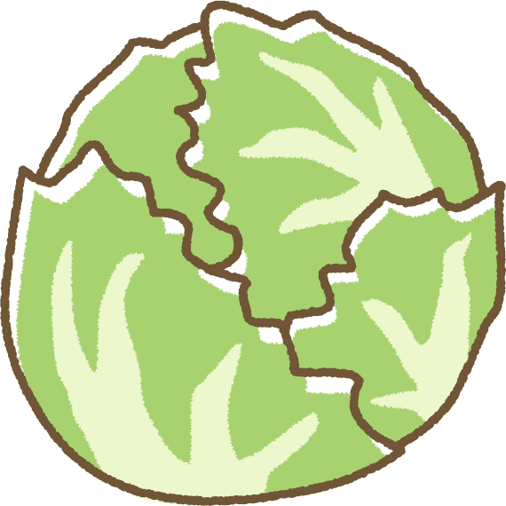

名前:ハイフン
ニックネーム:hi-fn
とりまやってみることが生きる上で大事だと思っています。
趣味: サイクリング、旅行
現在:理系大学生
大学で一年時にサークルを立ち上げ数ヶ月で40人規模のサークルにした。
サークル長として日々活動中
職務経験:コンビニアルバイト1年
塾のチューター一年間
学校名
東理大 創域理工学部 機械航空宇宙工学科
学年
学部二年
はじめまして、私は大学では機械工学を専攻しており、自身の能力をさらに高めるために、インターンシップの機会を探しています。私について以下にご紹介させていただきます。 チームワークとコミュニケーションの重要性を理解するために、塾のチューターとして1年間働きました。受験生の悩みをコミュニケーションを通じて解決するスキルを培いました。また、他にはコンビニでの1年間の勤務経験を通じて、忍耐強さと効率的なタスク管理を身につけました。 私の強みは行動力です。大学でサークルを立ち上げ、短期間で50人規模のメンバーを集めることができました。現在も成長と改善を目指し、アウトドア活動を通じて新たな体験と友情を提供するサークルを運営しています。サイクリングを中心としたイベントを2週間に1回のペースで開催し、多くの参加者を魅了するために努力しています。 プログラミングにも情熱を注いでおり、独自にプログラミングの基礎を学び、JavaScriptを用いて簡易なWebアプリを制作しました。海外滞在経験があり、英語を駆使して異なる文化背景を持つ人々と協力するスキルがあります。 将来に向けて、私は実務を通じてアプリ開発について学びたいと考えています。大学入学以来、プログラミングへの興味を持ち続け、独学でスキルを磨いています。未経験ではありますが、情熱と向上心を持ち、新たなスキルを身につける覚悟を持っております。皆様と共に成長できる機会を楽しみにしております。 どうぞよろしくお願い申し上げます。